Contents
Lab Exerices
% For the vedio, we find it is difficult include in matlab HTML, so we % choose three key frames. % We include all PeZ, and code implement in this.
1) Lab Exerices 4
a)
close all % as the document we show the PeZ GUI img4a = imread('4a.png'); figure; imshow(img4a)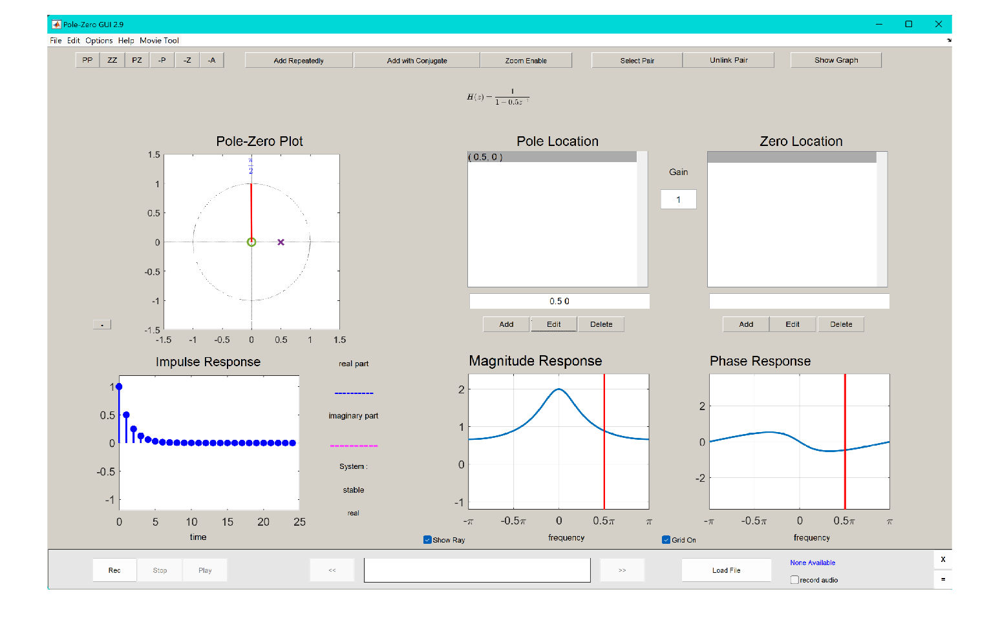
b)
We find that the H(z) is more and more flat.
video_4b = VideoReader('4b.mp4'); numFrames = video_4b.NumFrames; img4b_first_frame = read(video_4b, 1); img4b_mid_frame = read(video_4b, round(numFrames / 2)); img4b_last_frame = read(video_4b, 1100); close all figure; imshow(img4b_first_frame); title('First Frame'); figure; imshow(img4b_mid_frame); title('Middle Frame'); figure; imshow(img4b_last_frame); title('Last Frame'); fprintf('Please refer to the 4b.mp4 for more details.\n');
Please refer to the 4b.mp4 for more details.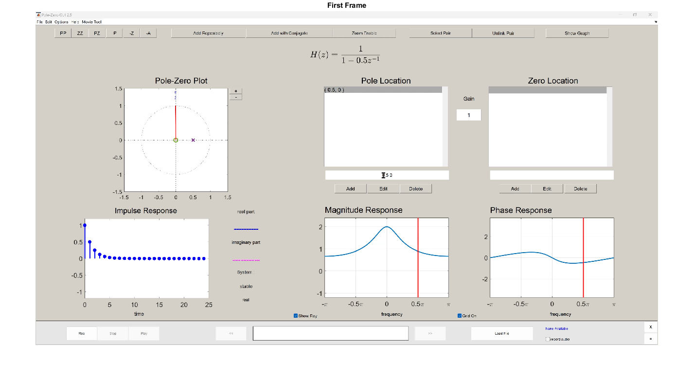
 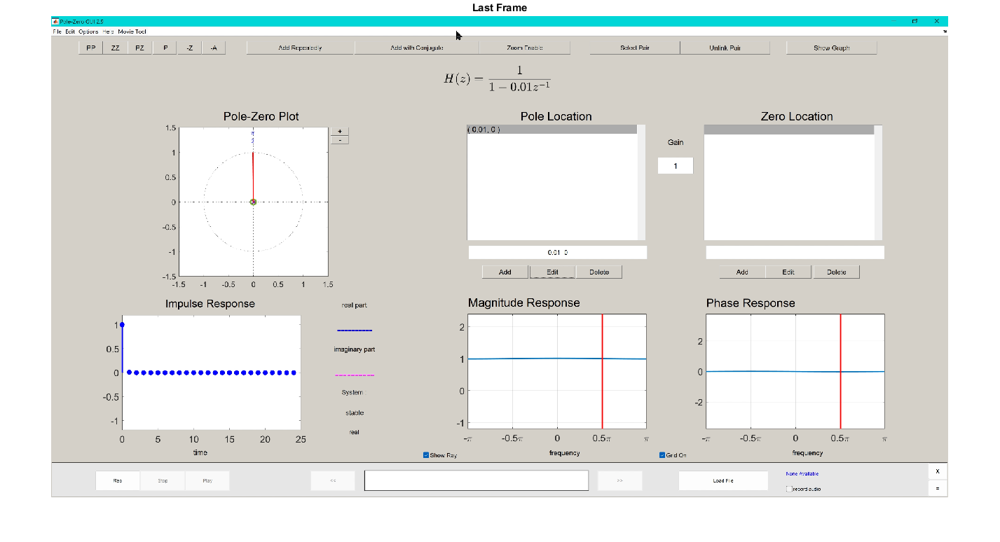
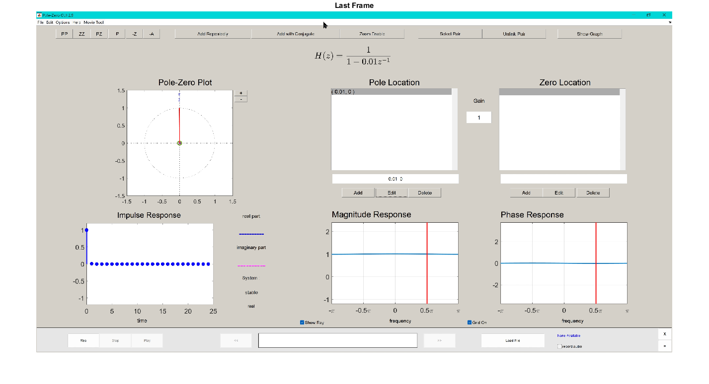 c)
video_4c = VideoReader('4c.mp4'); numFrames = video_4c.NumFrames; img4c_first_frame = read(video_4c, 1); img4c_mid_frame = read(video_4c, round(numFrames / 2)); img4c_last_frame = read(video_4c, 1290); close all figure; imshow(img4c_first_frame); title('First Frame'); figure; imshow(img4c_mid_frame); title('Middle Frame'); figure; imshow(img4c_last_frame); title('Last Frame'); fprintf('Please refer to the 4c.mp4 for more details.\n');
Please refer to the 4c.mp4 for more details.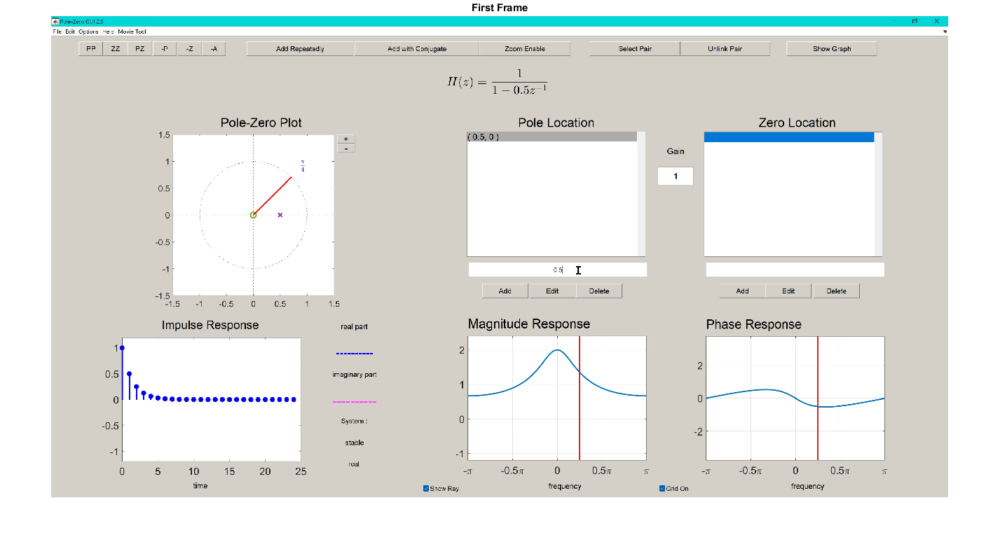 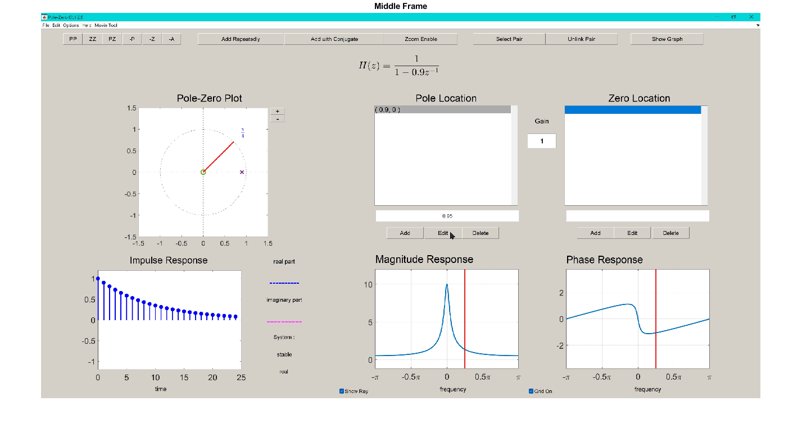 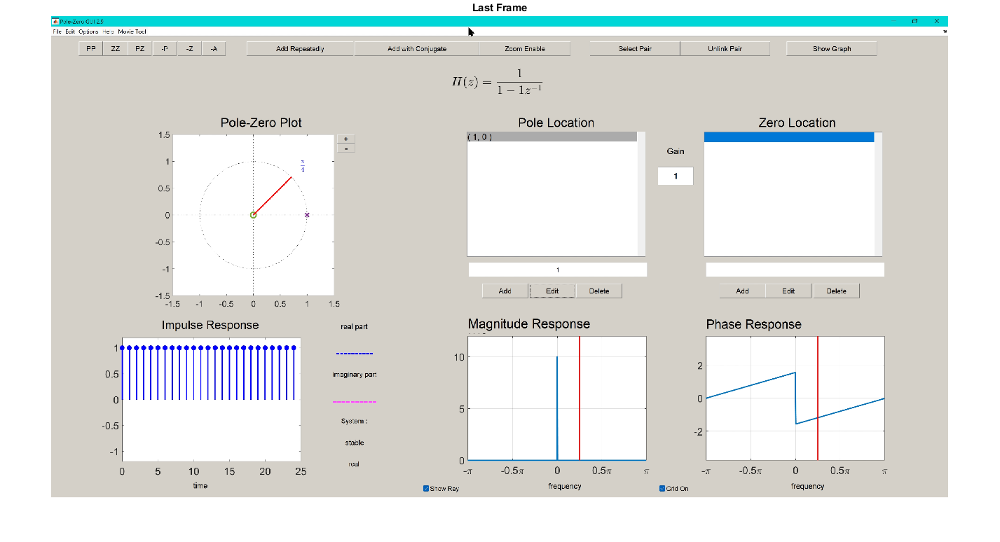
d)
close all figure; imshow(img4c_last_frame); title('We Find the h(n) -> 1, and the H(z) becomes close to Delta function');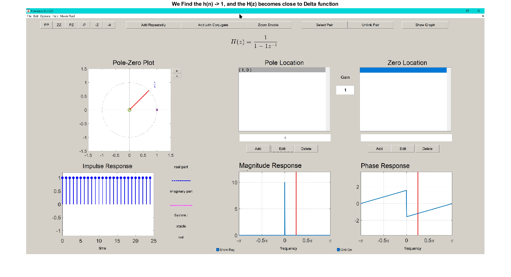
e)
close all % as the document we show the PeZ GUI % When the pole is outside the unit circle, $ h[n] $ grows and does not decay. This means the system is not stable because $ h[n] $ is not summable ($ \sum |h[n]| \to \infty $). % The frequency response $ H(e^{j\omega}) $ is not valid since it assumes the system is stable. Without stability, $ H(e^{j\omega}) $ cannot represent the system's behavior. img4e = imread('4e.png'); figure; imshow(img4e)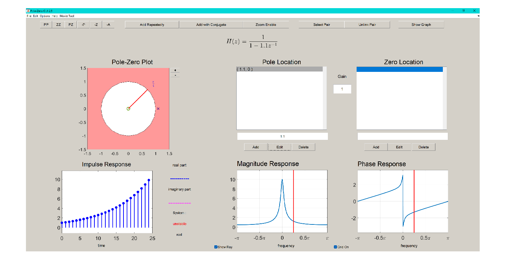
f)
% inside the unit circle in the z-plane.
2) Lab Exerices 5
a)
% a1^2 + 4a2 < 0
b)
close all % as the document we show the PeZ GUI img5b = imread('5b.png'); figure; imshow(img5b)
c)
close all % as the document we show the PeZ GUI img5c1 = imread('5c1.png'); figure; imshow(img5c1) img5c2 = imread('5c2.png'); figure; imshow(img5c2) % We notice that the peak moves with the phase of the poles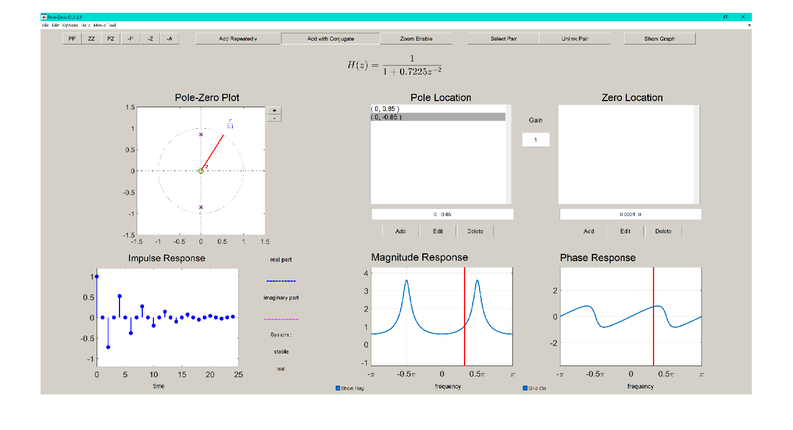 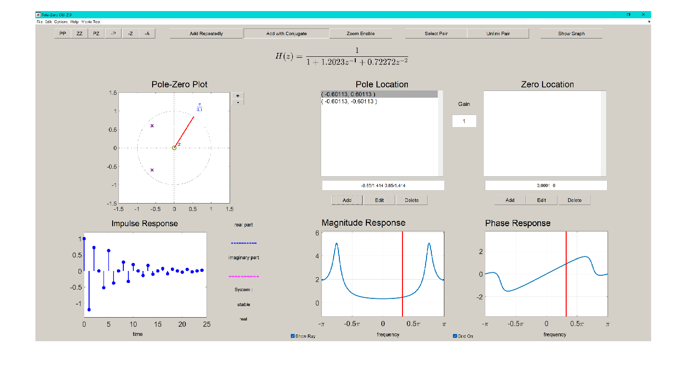
d)
close all % as the document we show the PeZ GUI img5d = imread('5d.png'); figure; imshow(img5d) % FIR filter because it only has zeros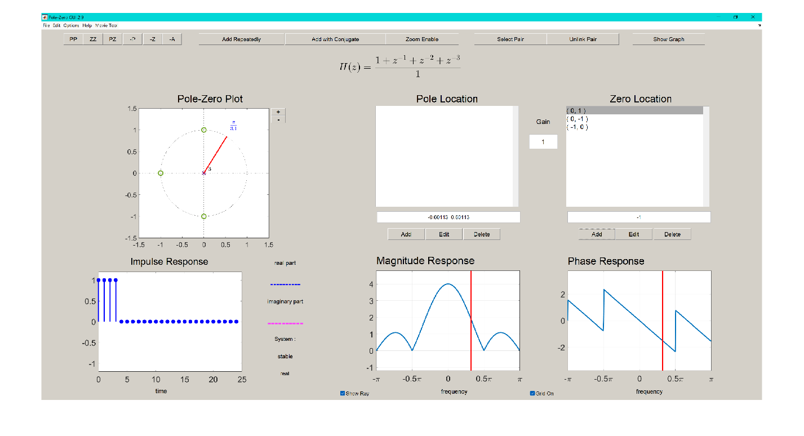
Lab Exerices 6
a)
close all % as the document we show the PeZ GUI img6a = imread('6a.png'); figure; imshow(img6a) img6a2 = imread('6a2.png'); figure; imshow(img6a2) % use freqz % Design zero filter H(z) with zeros at specified locations zeros = exp(1j * pi / 2 * [1, -1]); bb = poly(zeros); aa = 1; % Denominator coefficients (no poles) [HH, ~] = freqz(bb, aa, 1024, 'whole'); ww = linspace(-pi, pi, length(HH)); HH = fftshift(HH); figure; zplane(bb, aa); title('Pole-Zero Plot of Filter'); figure; plot((ww)/(2*pi), abs(HH)); xlabel('Frequency'); ylabel('Magnitude'); title('Frequency Response of Normalized H(z)'); grid on; zeros = [0, 0]; poles = 0.9 * exp(1j * pi / 2 * [1, -1]); aa = poly(poles); bb = poly(zeros); [HH, ~] = freqz(bb, aa, 1024, 'whole'); ww = linspace(-pi, pi, length(HH)); HH = fftshift(HH); figure; zplane(bb, aa); title('Pole-Zero Plot of Filter'); figure; plot((ww)/(2*pi), abs(HH)); xlabel('Frequency'); ylabel('Magnitude'); title('Frequency Response of Normalized H(z)'); grid on;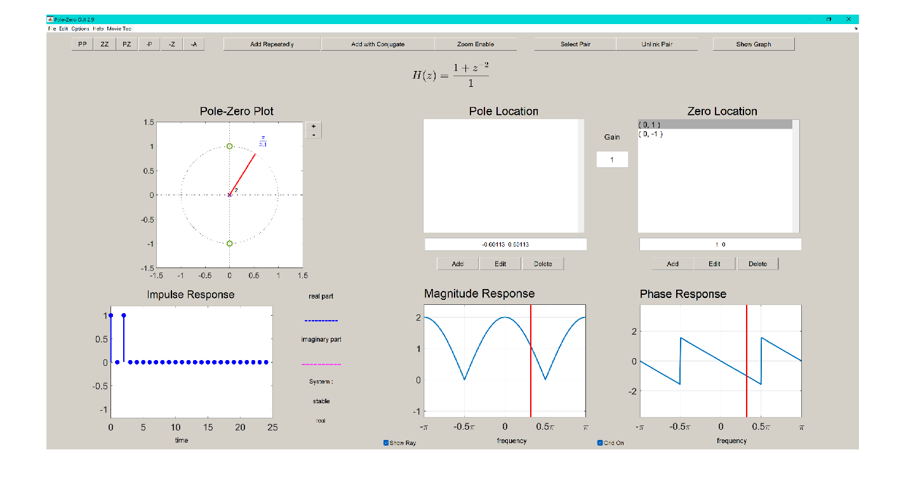 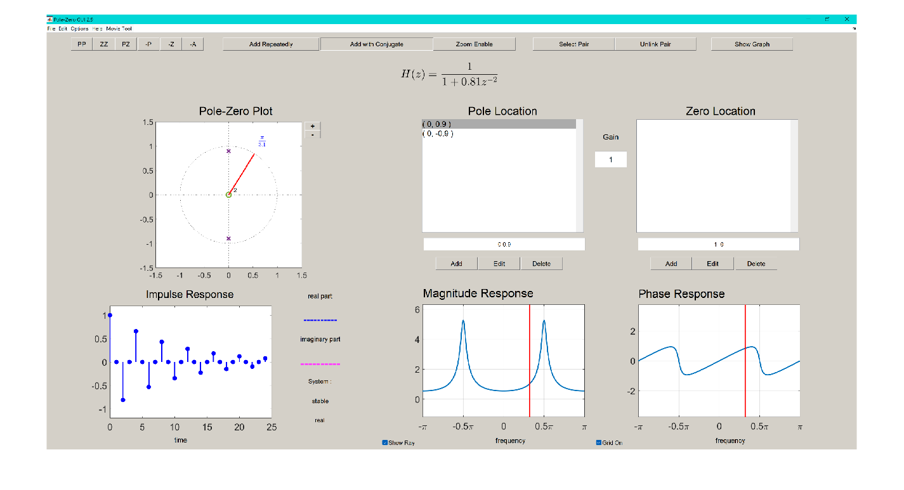 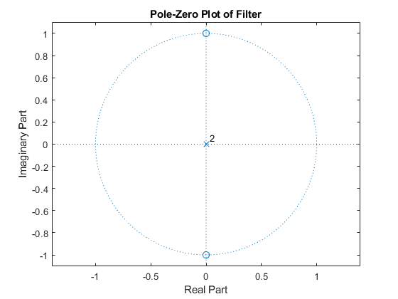 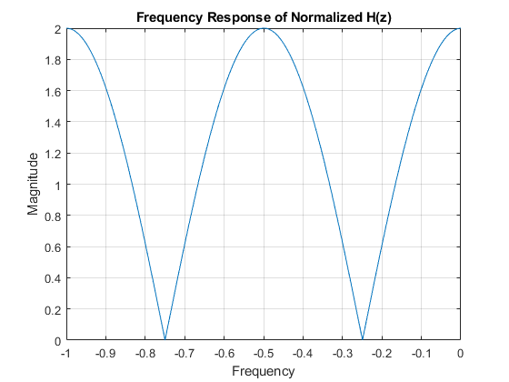 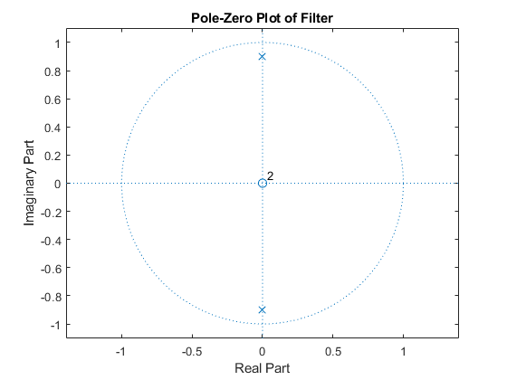 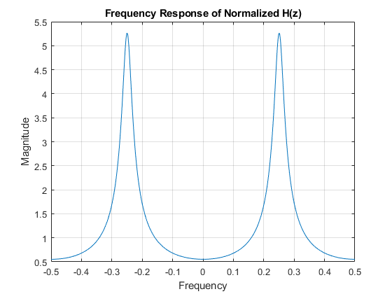
b)
close all % as the document we show the PeZ GUI img6b = imread('6b.png'); figure; imshow(img6b)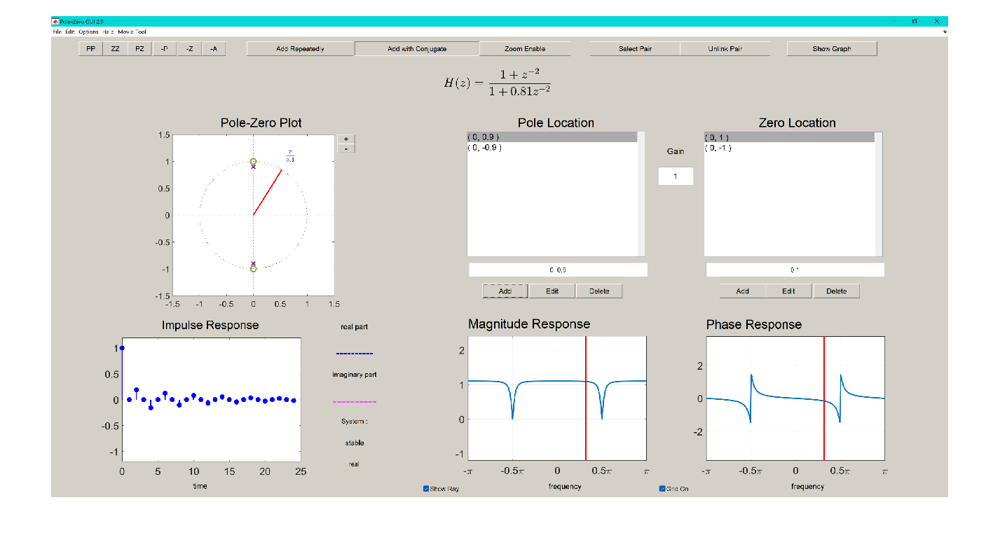
c)
% The notch exists because the zeros on the unit circle at +- pi/2 cancle out the frequency components at these points completely. % The gain is the same because the poles and zeros are symmetrically distributed, maintaining equal contributions to the magnitude. zeros = exp(1j * pi / 2 * [1, -1]); poles = 0.9 * exp(1j * pi / 2 * [1, -1]); aa = poly(poles); bb = poly(zeros); [HH, ~] = freqz(bb, aa, 1024, 'whole'); ww = linspace(-pi, pi, length(HH)); HH = fftshift(HH); close all figure; zplane(bb, aa); title('Pole-Zero Plot of Filter'); figure; plot((ww)/(2*pi), abs(HH)); xlabel('Frequency'); ylabel('Magnitude'); title('Frequency Response of Normalized H(z)'); grid on;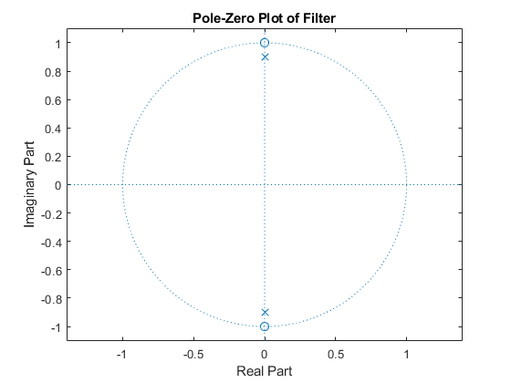 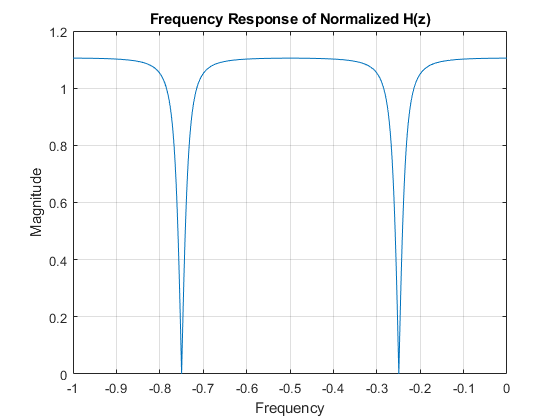
4) Lab Exerices 7
close all % as the document we show the PeZ GUI img71 = imread('71.png'); figure; imshow(img71) img72 = imread('72.png'); figure; imshow(img72) zeros = [1,-1]; poles = 0.75 * exp(1j * pi / 4 * [1, -1]); aa = poly(poles); bb = poly(zeros); [HH, ~] = freqz(bb, aa, 1024, 'whole'); G = 1/max(abs(HH)); disp(['The value of G, which normalizes the H(z) frequency response to have a maximum magnitude of 1, is: ', num2str(G)]);
The value of G, which normalizes the H(z) frequency response to have a maximum magnitude of 1, is: 0.21876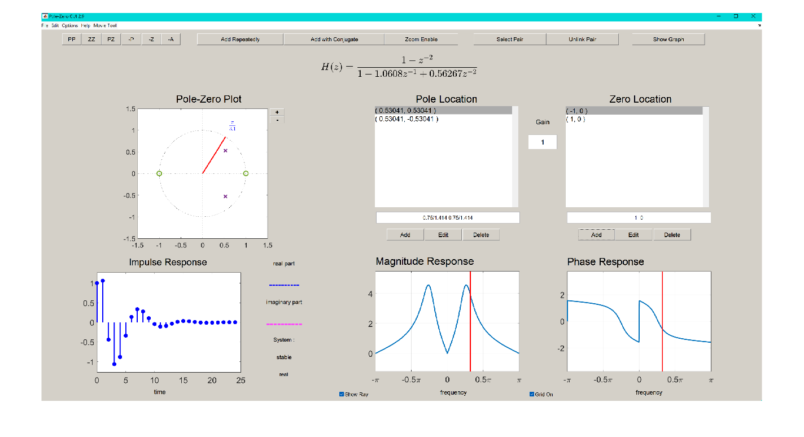 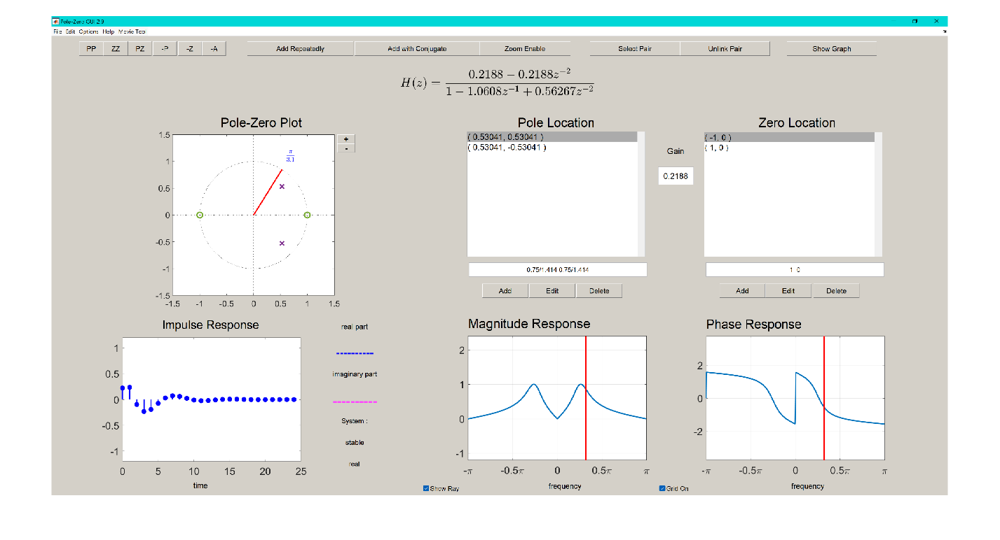
close all